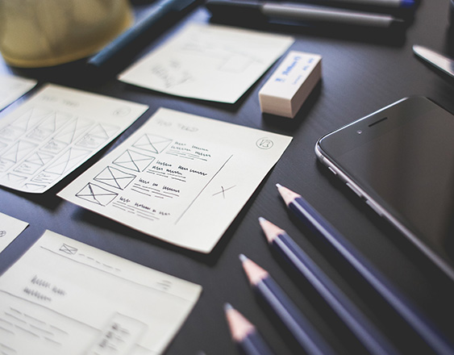

UI/UX дизайн — это и есть web-дизайн, его более глубокое и точное определение. Его задача — сделать пользовательский интерфейс сайта максимально привлекательным, удобным и логически правильным.
UI/UX дизайн (веб-дизайн) — проектирование пространства страниц веб-сайта с целью создания максимально привлекательного, удобного и эффективного восприятия информации вашей аудиторией.
Пользовательский интерфейс вашего сайта должен не просто быть красивым: содержимое должно быть логически связано, правильно подавать информацию для посетителя, а также подводить его к совершению определённых целевых действий, которые вам выгодны.
Интернет — самая конкурентная площадка, и именно профессиональный UI/UX дизайн может выгодно выделить вас среди других игроков рынка. Качественный web-дизайн привлекает внимание широкой аудитории и позволяет существенно укрепить позиции в веб-пространстве, привлечь новых клиентови улучшить ваш имидж. И наоборот, при плохом, «шаблонном» дизайне даже самая ценная информация останется незамеченной.
Веб-дизайн — это логика, забота об удобстве и художественное оформление в одном целом. Разработка веб-дизайна требует не только высокопрофессиональные дизайнерские навыки. Необходимо учитывать последние веб-технологии, разбираться в интернет-маркетинге, иметь достаточный опыт в веб-программировании и т.д.
Посмотрите сайты ваших конкурентов — большинство из них, кто имеет перспективное будущее, решили уделить достаточное внимание разработке web-дизайна. И мы советуем уже сейчас сделать UI/UX дизайн важным инструментом развития вашего бизнеса в интернете. Clock Creative Lab готовы создать для вас лучший сайт на рынке с уникальным web-дизайном — он будет красивым, удобным, иметь WOW-эффект, окажет влияние на успешность вашего бизнеса.
 UI — внешний вид сайта, а UX — это логика вашего веб-продуктаПеред UI/UX дизайнером стоит задача создать именно дружественный по отношению к пользователю интерфейс. На первый взгляд достижение такой цели может показаться делом несложным, но на деле — требуется масса времени, ресурсов и знаний на проектирование, разработку и тестирование проекта.
Главные ориентиры тут — удобство, практичность и интуитивная ясность. Функциональность, логика, удобство. UX — это то, что вы запоминаете.
UX и UI В чем различие? UX— опыт пользователя, его впечатления, восприятие вашего сайта. Качественный UX дизайн делает веб-сайт максимально удобным и интуитивно понятным, а также обеспечивает главное: чтобы посетители могли легко и самым простым путём достичь всех своих целей на вашем сайте (нужно довести каждого посетителя до какой-то логической точки в интерфейсе, чтобы он получил полезный и приятный опыт нахождения на вашем сайте). Структура сайта приобретает логику и ясность, очень доступно передавая всё содержимое страниц.
UI— внешний вид вашего сайта, его привлекательность и физические характеристики. UI-дизайнер работает над цветом страниц, размерами кнопок, расположением и читабельностью текста и так далее. Он разрабатывает стиль проекта, обеспечивает соответствие между визуальным дизайном и логической структурой сайта.
UI и UX — разные понятия. Их задачи, а также способы их решения сильно отличаются. Однако они должны работать в паре, чтобы обеспечить достижение высшей цели: передать вашей аудитории важную информацию в красивой, удобной и понятной форме. Используя лучший мировой опыт и наши собственные навыки, мы создаём образцовые веб-проекты: которые умеют заинтересовать и надолго привлечь внимание широкой аудитории.
Этапы разработки дизайна сайтов-
1. Анализ и определение задач
При разработке UI/UX дизайна мы скрупулёзно собираем информацию о вашем проекте, выясняем целевую аудиторию и определяем возможные стратегические шаги. После детального обсуждения проекта определяется оптимальный формат сайта, стратегия дизайна и ключевые задачи.
-
2. Исследование рынка
Тщательно изучается специфика вашего бизнеса, ситуация на рынке ваших услуг или товаров, а также возможности конкурентов. В отношении каждого проекта обязательно проводится бенчмаркинг — глубокий анализ отрасли и успешных игроков.
-
3. Проектирование структуры
Отталкиваясь от назначения сайта и заранее поставленных задач, мы спроектируем удобную и логичную структуру сайта. Этот «скелет» будет продуман таким образом, чтобы в будущем управлять вниманием и действиями пользователя.
-
4. Прорисовка уникального дизайна
При создании страниц вед-сайта мы очень тщательно продумываем возможные пользовательские сценарии, создаём множество рабочих макетов и прототипов, детально прорисовываем каждую деталь пользовательского интерфейса. Всем визуальным элементам сайта, которые можно нарисовать, уделяется самое пристальное внимание. Ни одна значимая деталь не будет упущена из-под нашего контроля.